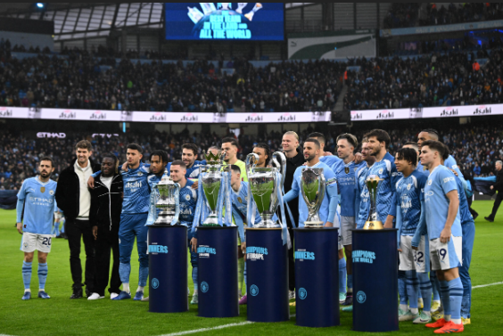

Manchester city Football Club
How being a man city fan for the past 8 years feels
Being a Manchester City fan for the past eight years has been an incredible and emotional journey. Watching the team grow from strength to strength under Pep Guardiola has been nothing short of inspiring. The football City plays, the precision, teamwork, and creativity, makes every match exciting to watch. Seeing players like Kevin De Bruyne, Erling Haaland, Bernardo Silva, and Phil Foden perform at such a high level fills me with pride. The club’s rise to dominance in English and European football has shown what dedication, strategy, and unity can achieve. I’ve experienced moments of pure joy, from dramatic Premier League title wins to finally lifting the UEFA Champions League trophy. But what I love most is the spirit of the club and the connection between the players, fans, and city itself. Being a City fan isn’t just about celebrating victories; it’s about believing in a philosophy of football built on passion, hard work, and excellence. The past eight years have made their fans proud to wear the sky blue, and no matter what the future holds, They’ll always stand by Manchester City.